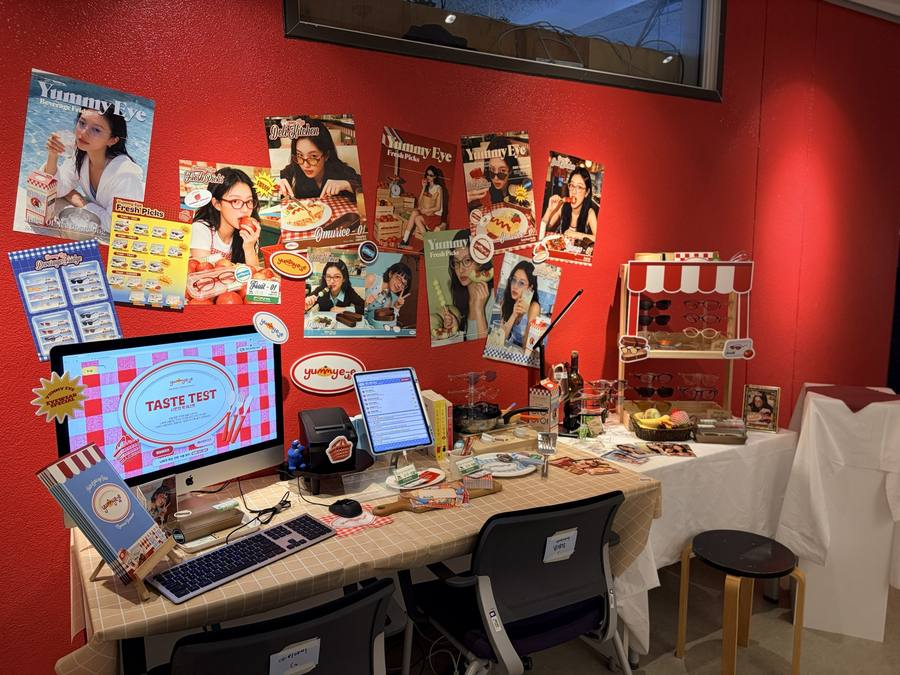
What is Grocerant?
그로서란트(Grocerant)는 식료품점(Grocery)과 식당(Restaurant)을 합친 말이에요. 마트에 가면 우리는 재료를 고르면서도, 오늘 먹을 한 끼를 고르면서도 괜히 신이 나죠. 야미아이는 그 설렘을 안경으로 옮겨 온 아이웨어 그로서란트예요.
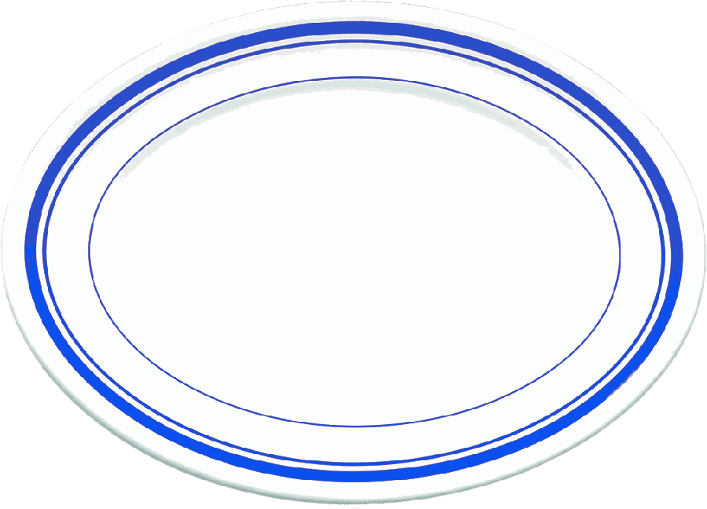
GROCERANT · EYEWEAR OF TASTE
오늘, 어떤 맛을 쓰실래요?
음식 포장을 뜯으면, 안경이 나옵니다.
델리 · 프레시 · 음료, 46가지 맛 중 내 맛을 찾아보세요.
ATC 2026 11.26 – 11.29 · 서강대학교 X관
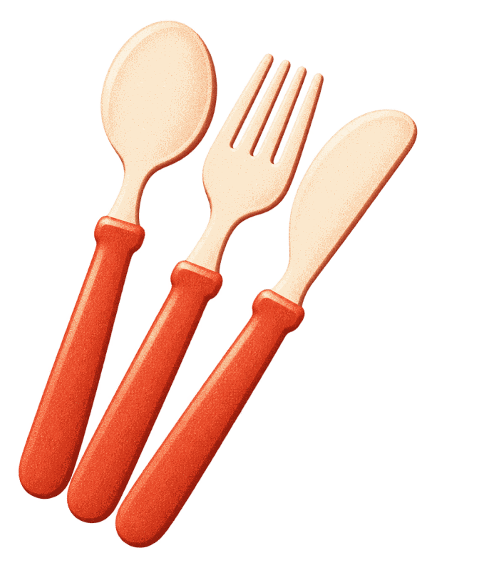
ATC 2026 · 11.26 – 11.29 · 서강대학교 X관
YUMMY EYE는 음식의 색과 질감, 그리고 포장을 아이웨어로 옮긴 브랜드예요. 도시락에 담긴 델리, 트레이에 담긴 신선 식품, 팩에 담긴 음료처럼 안경도 맛별로 골라 담아 보세요.
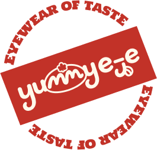
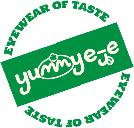
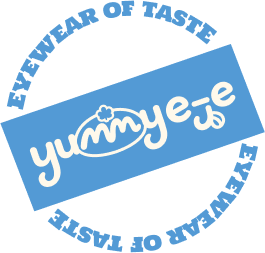
옆으로 넘겨 다음 장을 보세요 →
00 · OUR STORY
레스토랑과 마트의 색과 모양을 아이웨어로. 안경의 맛있는 변신이 시작된 이야기예요.

그로서란트(Grocerant)는 식료품점(Grocery)과 식당(Restaurant)을 합친 말이에요. 마트에 가면 우리는 재료를 고르면서도, 오늘 먹을 한 끼를 고르면서도 괜히 신이 나죠. 야미아이는 그 설렘을 안경으로 옮겨 온 아이웨어 그로서란트예요.
안경원에서 일하다 보면, 어울리는 안경을 찾고 싶으면서도 그 과정을 부담스러워하는 분들을 자주 만나요. "어차피 못 찾을 거야", "난 원래 안경이 안 어울려" 하고 단정해 버리는 모습이 늘 안타까웠어요. 안경을 지루하고 멋없는 물건으로만 여기던 사람들에게, 마트에 놀러 가듯 즐겁고 색다르게 고를 수 있다는 걸 보여주고 싶었어요.
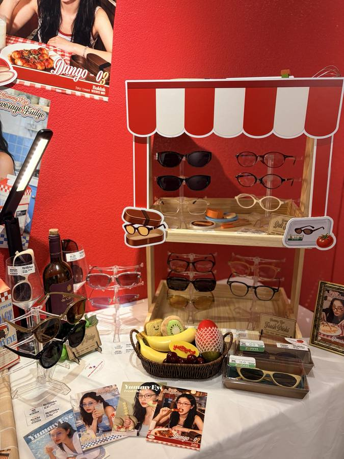
어떤 작가들에게서 영감을 받았나요?전시장에 놓인 『오무라이스 잼잼』과 『차이니스 봉봉 클럽』은 조경규 작가님의 작품이에요. 초등학생 때부터 닳도록 읽었을 만큼 음식 이야기를 좋아했거든요. (단행본을 전부 가져오고 싶었지만 너무 덕후 같아 보일까 봐 참았어요.) 요시다 유니, 몽중다과 작가님처럼 익숙한 물건을 음식으로 다시 보는 시선에서도 많이 배웠어요. "이 테는 씻은 직후의 사과처럼 청량한 레드네", "저 프레임은 떡볶이 모양 같은데?" 같은 발상이 여기서 시작됐어요.
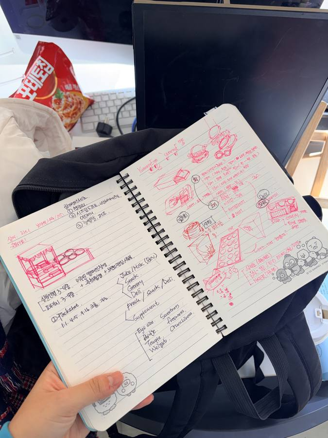
왜 짚후라기인가요?저는 언제나 먹는 것에서 즐거움을 느껴요. 진서 + 해피 = 지피, 짚, 짚후라기. 제가 좋아하는 모든 것을 짚어(Jip) 와서, 사람들도 해피해지는 경험을 디자인하고 싶다는 뜻이 담긴 별명이에요.
인형 브랜드 젤리캣처럼 팝업과 매장을 열고 싶어요. 젤리캣 매장에서는 점원이 팬케이크 인형을 요리하듯 포장해 주잖아요. 안경원에서도 그런 경험을 만들고 싶어요. Beverage 모델을 사면 음료를 따르듯 포장해 주고, 피팅까지 맞춰 주는 안경 브랜드. 생각만 해도 가슴이 떨려요!
01 · HOW TO DINE
처음 오셨다면 여기부터. 한 바퀴 도는 데 10분이면 충분해요.
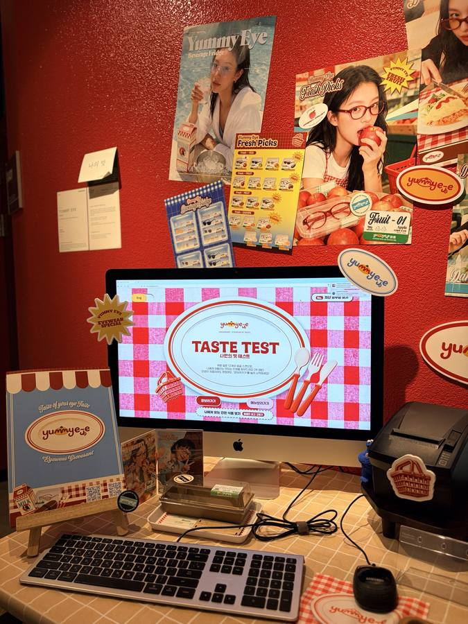
맛 테스트는 취향을 6가지 맛으로 나눠요. 가장 진한 맛이 '주맛', 한 꼬집 들어간 맛이 '부맛'이에요.
02 · Q&A
주문 전에 많이들 물어보시는 것들이에요. 나머지는 셰프에게 직접 물어봐 주세요.
아니요. 얼굴 사진은 저장하거나 전송하지 않아요. 화면 안에서 얼굴 길이, 가장 넓은 곳, 턱선만 재고 바로 버려요. 연락처는 받지 않고, 이름은 영수증에 넣고 싶을 때만 적어요(선택).
확인 화면에서 '다른 얼굴형이에요'를 누르고 세 가지(길이 · 넓은 곳 · 턱선)를 직접 고르면 돼요. 카메라는 참고용 조리 도구일 뿐, 간은 내가 맞춥니다.
셰잎은 안경테 모양, 다리(템플)는 귀에 거는 부분, 브릿지는 두 렌즈를 잇는 코 위 부분이에요. 아세테이트는 두께감 있는 뿔테 소재, 틴트는 옅은 색이 들어간 렌즈예요.
46가지 중 19가지가 실물로 테이블에 차려져 있어요. 메뉴판에서 '실물 시식' 스티커가 붙은 모델이에요. 실물만 모아 보기
지금은 전시를 위해 차린 컨셉 컬렉션이라 판매하지 않아요. 궁금한 점은 전시장에서 셰프에게 직접 물어보세요. 인스타그램 @yummyeye_official로도 물어볼 수 있어요.
영수증 아래 QR을 휴대폰으로 찍으면 같은 결과가 다시 열려요. 전시장 iMac 첫 화면의 '지난 영수증 찾기'에 영수증 번호 세 자리를 넣어도 다시 볼 수 있어요. 영수증을 잃어버렸다면 맛 테스트를 휴대폰으로 다시 해봐도 돼요.
04 · CATALOG
46가지 안경의 레시피를 한눈에. 카드를 누르면 자세히 볼 수 있어요.
05 · TODAY'S CHEF
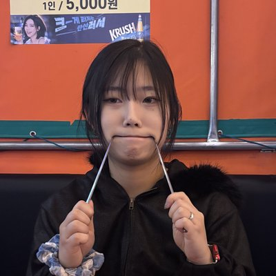
CHEF · 냠냠짚 YUMYUMJIP
김진서
서강대학교 아트앤테크놀로지학과
안경원집 딸로 자라며 "나한테 어울리는 안경이 뭔지 모르겠어"라는 고민을 수없이 봤어요. 안경 고르기가 메뉴 고르기만큼 쉽고 즐거웠으면 해서, 레스토랑과 마트의 색과 모양을 입힌 안경 브랜드를 차렸어요.
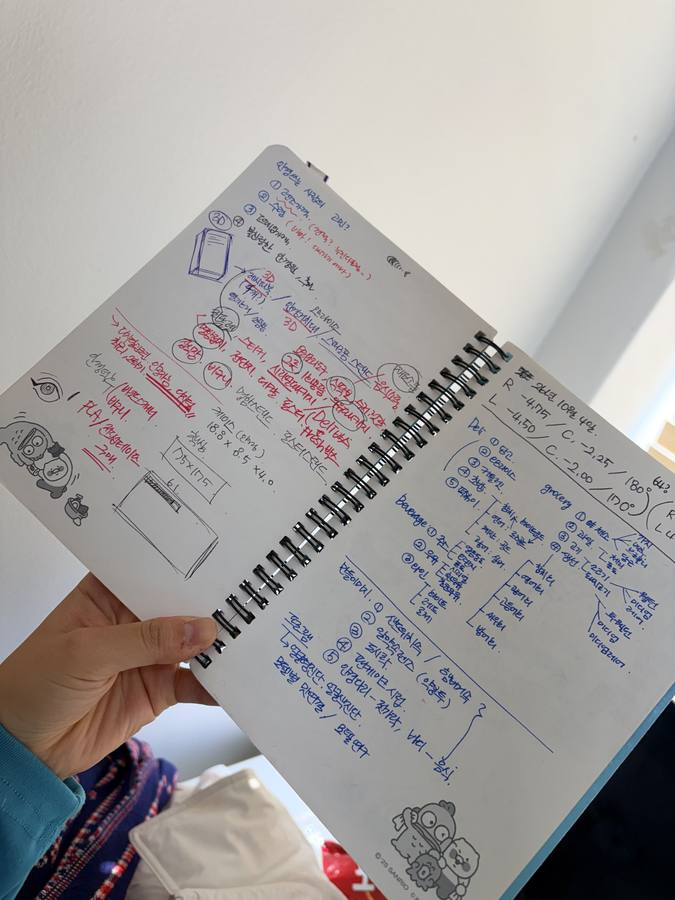
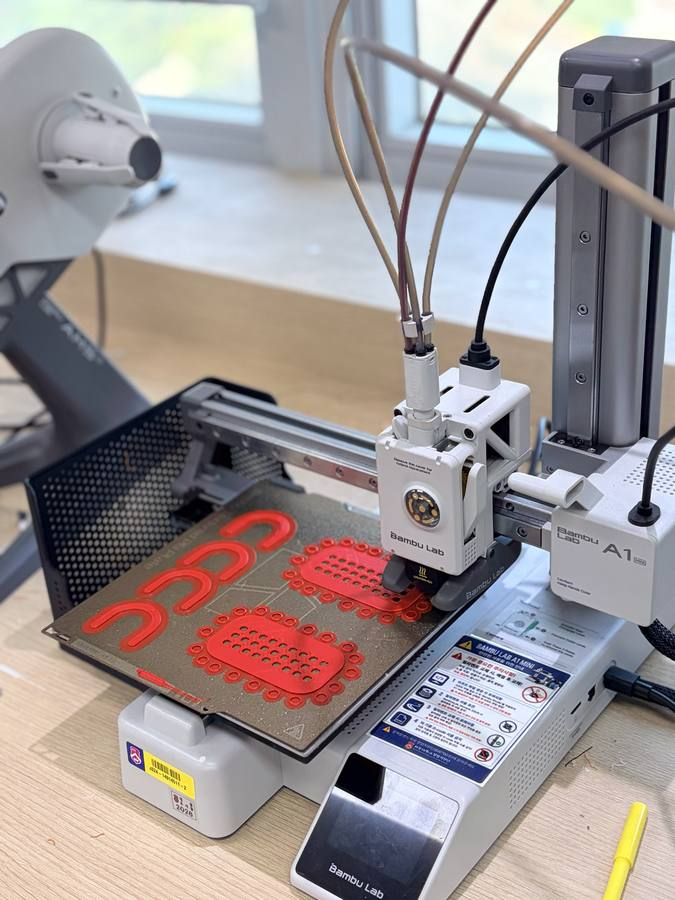
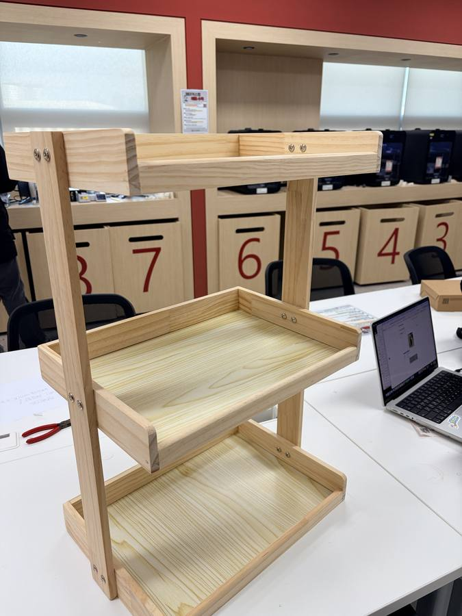
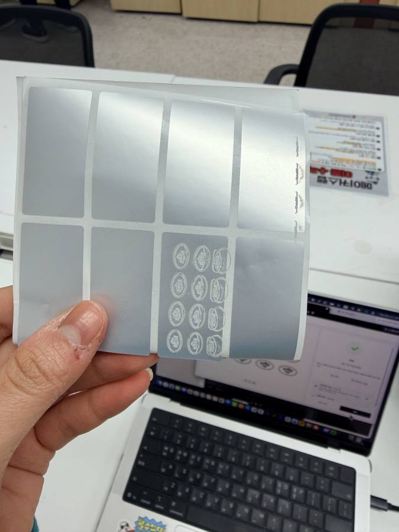
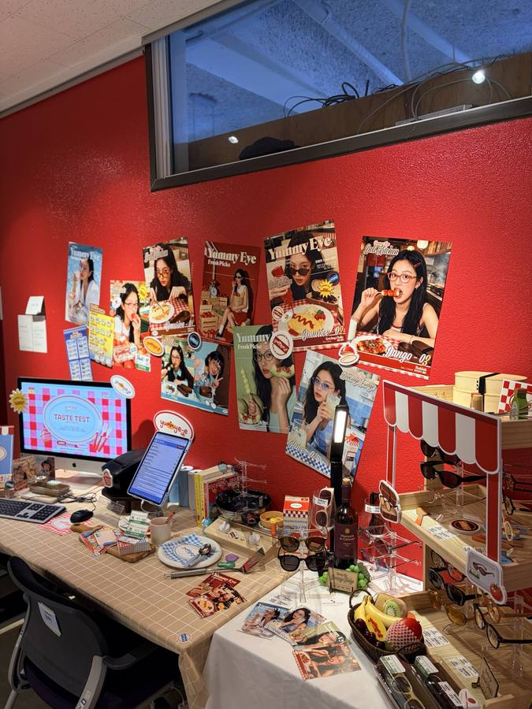
06 · LOOKBOOK
라인별 대표 맛을 쓰고 한 상 차린 모델 컷 10장이에요. 누르면 크게 볼 수 있어요. AI로 만든 이미지예요.